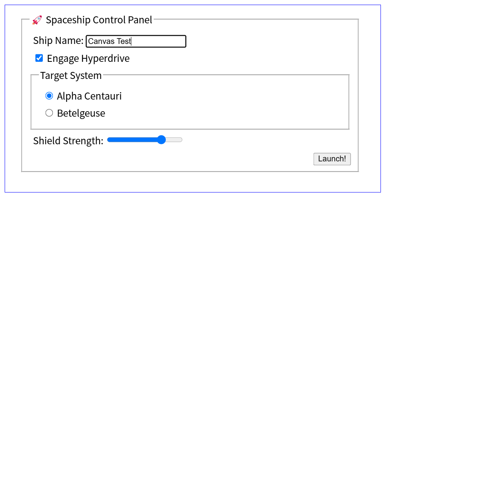
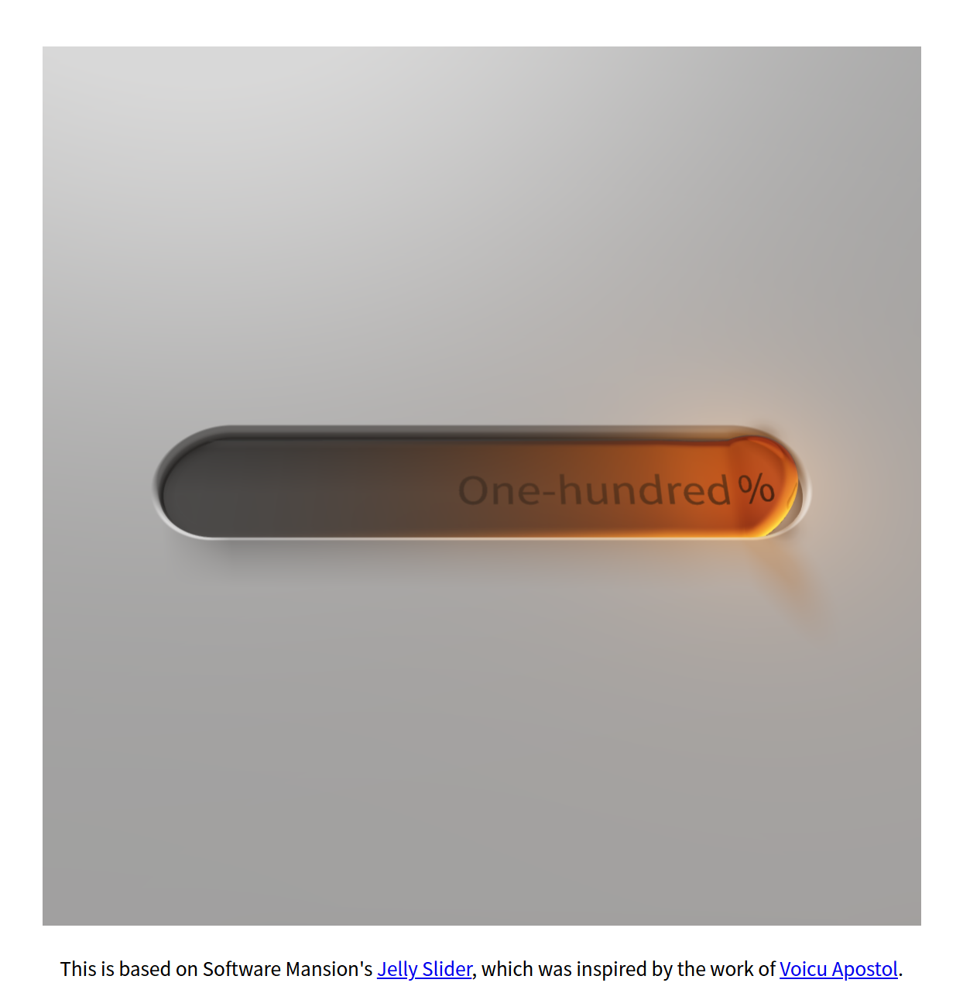

先给结论：不是 PPT 级概念，是真能跑；但不能写成“已经颠覆前端”。
我把官方 demo 跑完后，判断可以压缩成三句话：普通 Chrome 当前不可用；Chrome for Testing Canary 150 开启 canvas-draw-element 后可用；2D、表单交互、WebGL、WebGPU 都能看到真实效果。
官方页面能打开，但核心 API 不存在，Canvas 是空白。
drawElementImage、texElementImage2D、copyElementImageToTexture 都出现。
它仍是实验能力，不适合宣传成稳定标准或现成工程方案。
最准确的表述：HTML-in-Canvas 在 Canary 150 开启实验开关后，已经能跑通 2D、表单交互、WebGL 纹理和 WebGPU 纹理 demo；但普通 Chrome 当前不可用，距离生产级还很远。
测试不是看视频：我拉了官方仓库，跑了两个浏览器版本。
测试对象是 WICG 官方仓库，不是二手转载文章。仓库里有几个直接可运行的例子：复杂文本、表单交互、饼图标签、WebGL 立方体，以及一个需要 Vite 的 WebGPU jelly slider。
下载 WICG/html-in-canvas 到本地实验目录。
用 python -m http.server 跑官方 HTML demo。
固定 Chrome 148 打开页面，采 API 和截图。
下载 Chrome for Testing Canary 150，启用实验项。
检测 API、像素输出、交互、WebGL 和 WebGPU。
git clone https://github.com/WICG/html-in-canvas
cd html-in-canvas
python -m http.server 4188 --bind 127.0.0.1Canary 版本来自 Chrome for Testing，独立安装在本地工具目录，没有动固定 Chrome 登录态。
Chrome for Testing Canary: 150.0.7850.0
Flag: chrome://flags/#canvas-draw-element
Local State: "canvas-draw-element@1"第一轮：普通 Chrome 148，页面能开，但功能等于没有。
先用当前固定 Chrome 跑一遍，这是最接近日常用户环境的测试。结果很干脆：官方 demo 页面能访问，<canvas> 边框也显示了，但 HTML 内容没有被画进去。
核心 API 全部不存在：
canvas.requestPaint是undefinedCanvasRenderingContext2D.drawElementImage是undefinedWebGLRenderingContext.texElementImage2D是undefinedGPUQueue.copyElementImageToTexture是undefined

| 环境 | requestPaint | drawElementImage | WebGL texElementImage2D | 结论 |
|---|---|---|---|---|
| Chrome 148 普通版 | undefined | undefined | undefined | 不可用，只能打开页面。 |
| Canary 150 默认 | undefined | undefined | undefined | 有实验项，但默认不开。 |
| Canary 150 + flag | function | function | function | 官方 demo 实际跑通。 |
第二轮：Canary 150 开 flag 后，核心 API 全部出现。
Chrome for Testing Canary 150 的 chrome://flags/#canvas-draw-element 页面里确实能看到一个叫 HTML-in-Canvas 的实验项。描述也很直白：启用 Canvas 2D drawElement API 和 WebGL texElement2D API，用于把 HTML 内容画进 Canvas。
这一步之后，它从“概念文章里的 API”，变成了浏览器里真实存在的函数。
canvas.requestPaint function
canvas.captureElementImage function
CanvasRenderingContext2D.drawElementImage function
WebGLRenderingContext.texElementImage2D function
WebGL2RenderingContext.texElementImage2D function
GPUQueue.copyElementImageToTexture function逐项看截图：它能画 HTML，也能保留表单交互。
下面所有图片都是本地实测截图，不是官方宣传图。这里要看的是三件事：内容是不是进入 Canvas，复杂布局是不是正常，交互是不是还能落回 DOM。
1. 复杂文本：链接、粗体、RTL、竖排、图片、SVG 都画进去了
这个 demo 不是简单的 Hello World。它包含链接、粗体、emoji、RTL 文本、竖排中文、图片和 SVG。启用 flag 后，这些内容被浏览器排版，再由 drawElementImage() 绘制到 Canvas，并且整体还能旋转。

2. 表单交互：输入框真的能点，值真的能改
这个结果比“能画出来”更重要。表单 demo 里，我用自动化点击输入框，选中原文字，再输入 Canvas Test。检查结果显示当前 active element 是 shipName，输入框值也变成了 Canvas Test。

{
"activeId": "shipName",
"value": "Canvas Test",
"checked": true
}3. 饼图：Canvas 画图形，HTML 负责多行标签
这正是 HTML-in-Canvas 最容易理解的价值：Canvas 擅长画扇区，HTML 擅长排文字。以前你要自己算标签换行、字号、对齐；现在可以把标签作为 DOM 子元素，让浏览器处理排版，再画进 Canvas。

4. WebGL：HTML 变成 3D 立方体纹理
WebGL demo 跑通后，意义就不只是“Canvas 2D 里画个表单”。它证明 HTML 渲染结果可以作为纹理进入 3D 管线。截图里的立方体表面，就是 HTML 内容。

texElementImage2D() 可用，HTML 内容被贴到旋转立方体上。5. WebGPU：copyElementImageToTexture 也存在，jelly slider 能渲染
WebGPU 示例需要单独安装依赖并启动 Vite。页面没有异常，GPUQueue.copyElementImageToTexture 是 function，jelly slider 的视觉也成功渲染。

所以它颠覆了吗？还没有。它现在更像一条刚露出来的桥。
如果只看 demo，HTML-in-Canvas 的方向确实很强：DOM 管布局和语义，Canvas/WebGL/WebGPU 管绘制和变换。但从工程角度看，它现在还不能被写成“前端生产范式已经改写”。
| 原文说法 | 实测后怎么改 | 原因 |
|---|---|---|
| 现在能用 | Canary + flag 后能用 | 普通 Chrome 148 下 API 不存在。 |
| 痛点一次性清零 | 明显缓解一部分痛点 | 仍有实验开关、兼容性、安全和同步问题。 |
| 完整交互 | 官方表单 demo 可交互 | 交互路径成立，但复杂场景仍要实测。 |
| HTML 就是 Canvas | Canvas 可以绘制 HTML 渲染快照 | DOM 仍然存在，并参与布局、命中测试和无障碍。 |
| 生产级方案 | 暂时不能这么写 | 官方仍定位 Developer Trial / 实验能力。 |
这也是我建议文章降温的原因。它不是假东西，但也不是今天就能拿去改公司主链路的稳定能力。
如果写成公众号文章，应该从“实测”切入，而不是从“颠覆”切入。
这个题材最有传播力的地方，不是重复“DOM 和 Canvas 终于打通了”，而是把读者带进真实测试过程：普通 Chrome 空白、Canary 开 flag、API 出现、表单能输入、WebGL/WebGPU 能渲染。
建议标题
我本地跑了一遍 HTML-in-Canvas：能跑，但还远不是生产级
这个标题更诚实，也更有可信度。它承认技术方向是真的，同时把边界说清楚。
本地报告：F:\codex\experiments\html-in-canvas\TEST-REPORT.md